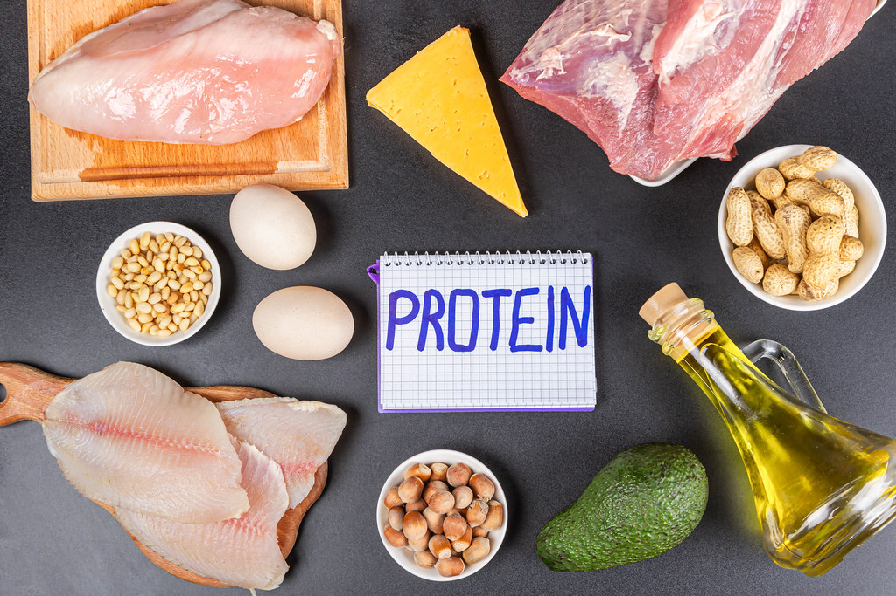

Big 3 Elements
As is known to all, the energy required by the human body to maintain normal liver function and daily activities is mainly ingested from food, and food can provide energy substances including carbohydrates, fat, and proteins.
In fact, most common foods contain all three nutrients at the same time, but in different proportions, and therefore can be classified as different nutrient supplement foods.
When it comes to meat, for example, focus on protein; when it comes to potatoes, the main supplement is carbohydrates; when it comes to nuts, focus on fat.
Carbohydrate
Carbohydrates, which include starches and sugars, have the greatest impact on blood sugar among all foods. After digestion, these two forms of carbohydrates are broken down into simple sugars called glucose in the body. Carbohydrates play a significant role in our diet because glucose is the primary monosaccharide that provides energy to the body.
High-Carb Foods
- Rice, grains, cereal, noodles
- Bread, tortillas, cookies, bagels
- Dried beans, peas, lentils
- Vegetables such as potatoes, corn, beans, squash
- Fruit
- Sugars, like cane sugar and honey

Proteins
Protein is the material basis of all life, is an important part of the body cells, and is the main raw material of human tissue renewal and repair.
Protein is not only a key ingredient in food, but it's also a basic building block of your body. Most meats contain both protein and fat. However, so too much animal-derived protein means too many calories and fat, resulting in weight gain.
Foods in High Protein
- Meat: beef, chicken, chicken breast, and pork
- Seafood: fish, lobster, and shellfish
- Dairy products: egg and cheese
- Plant sources of protein, such as beans, nuts, and tofu

Fats
Human dietary fat sources are mainly animal fat and plant fat.
Fat has four main effects on the human body:
- Caloric function: Fat produces about 2.2 times as many calories as the same amount of protein or carbohydrate. It can be seen that fat is an important source of body heat.
- The role of constituting body tissues and bioactive substances. Fat is one of the most important components of body cells.
- The role of regulating physiological function.
- Fat can also store "fuel" for the body as a backup. After eating fat, the unused portion can be stored in the body for use when the body needs heat.
High Fat Foods
- Butter and margarine
- Oils, such as vegetable oil. Olive oil and canola oil
- Salad dressing and mayonnaise
- Nuts and seeds
Diet and Health:
- Type 1 diabetes: You have to eat the right amount of carbohydrates to match your insulin intake. To achieve ideal blood sugar, it is important to calculate carbohydrates accurately. Carbohydrates are measured in grams of weight, and changes of even a few grams can cause fluctuations in blood sugar.
- Type 2 diabetes and use insulin: Carbohydrate intake and medication must be matched appropriately. For optimal blood sugar results, carbohydrate calculations must be accurate.
- Kidney problems: You need to limit your protein intake.
- Limiting fat intake can help control weight and prevent heart and vascular diseases.
Food Recipes Around the World
Asian: Red Curry Chicken
the Mediterranean: Shakshuka
European: Mozzarella, Basil & Zucchini Frittata